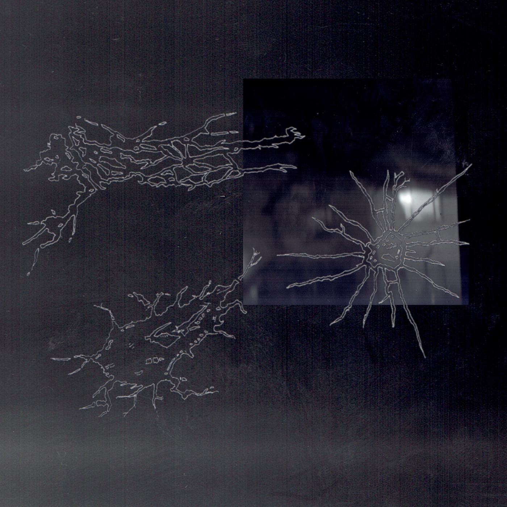
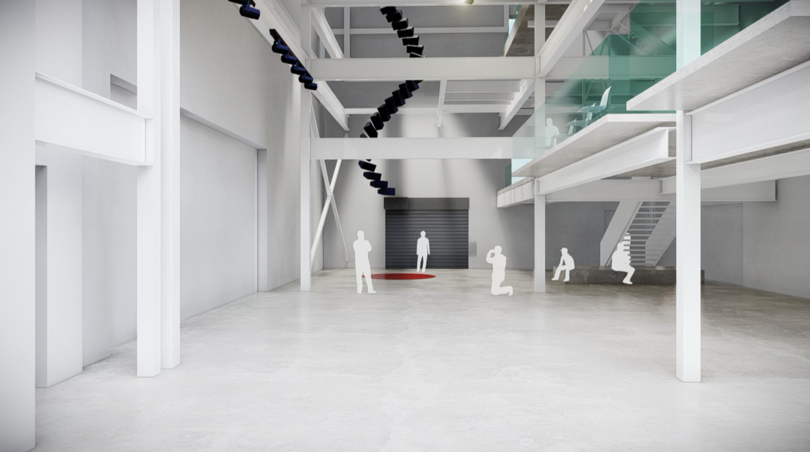
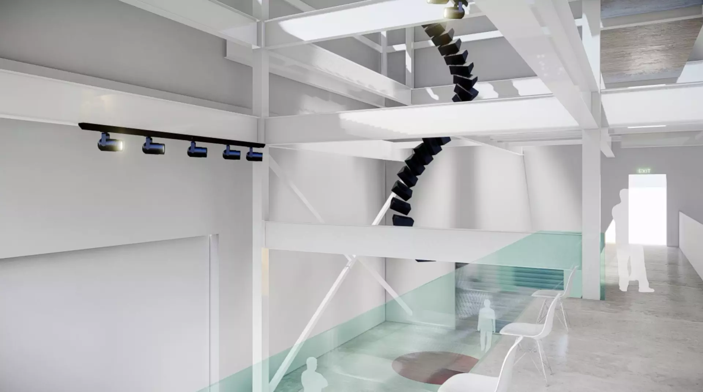
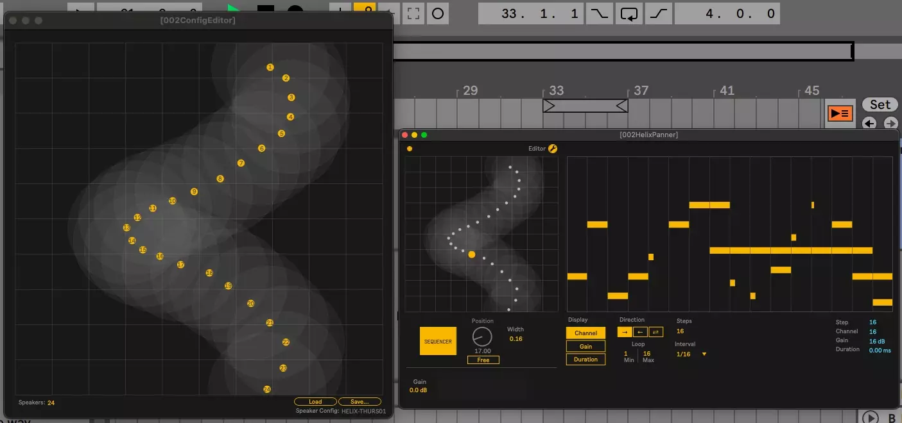

I'm a sound artist and technologist, working in various mediums, focusing on sound design, technology and music composition.
I have an extensive background in music production, having grown up as a dance music producer and DJ in Cape Town. Since 2018, I've been working as a composer doing film, commercials and advertisement, and have since branched out into post-production, sound design and technology. My work relies on technology for creation, and often involves inventing and building custom tools and algorithms for art installations and bespoke jobs. As a producer, I make music under my project Aetix, which drifts between ambience and heavier club tracks. I have a lifelong fascination with digital tools and finding ways to harness them for meaningful work.
Big buildups and dread, a keen nod to lost memories of psytrance parties.
Produced, Mixed & Mastered: Nick Rushton
Cover Art: Nick Rushton
Released: September 2025

A collection of tracks made between 2021 and 2024 that I never knew what to do with. I can no longer open the project files for most of them, so the released versions are what remain.
Produced, Mixed & Mastered: Nick Rushton
Cover Art: Nick Rushton
Released: May 2024
My desire for building technology exists as a direct feedback from the needs of my artistic practices, and the desire to transcend the limitations of my tools. I've built drum machines, audio effects, synthesisers, devices for custom art installations and worked with artists like Ben Frost and Swak Catalog.
Commissioned piece with Honeymoon Studios. Includes some of my own sound design.
← back to film & commercials
Death of a Whistleblower
Composition
I worked on the film by South African director Ian Gabriel as an assistant composer to Markus Wormstorm, including writing full scores for scenes in the film, as well as the trailer music and SFX.
← back to film & commercials
Gemini Man: TV Spot
Sound Design
Sound design with elements licensed to JDM Music used in Gemini Man with collaborator Julian Lee.
← back to film & commercials
Biblo.tv and Dylan Wrankmore VFX
Composition, Sound Design
Composition and some sound design for Dylan Wrankmore and Biblo.tv/Markus Wormstorm titled 'The Last Honest Machine', which is a showreel video for VFX artist Dylan Wrankmore centred around a recreation of the 80's show Knight Rider.
← back to film & commercials
Think Sports Fitness - takealot.com
Composition
Composition licensed through Honeymoon Studios for takealot.com fitness campaign.
← back to installations
Ben Frost: Among The Petals
Ben approached me with a task to build him a panner for an exhibition that would allow him
to interface with custom speaker configurations. Lots of these kinds of panners exist, but the
question was: how can we make the panner behave circularly even if the speakers are set
up in a straight line? So we made a panner that allows you to map a custom speaker
configuration, with a round robin ‘position’ dial. There is also a ‘sequencer mode’ which
allows you to sequence the panner in step format, synced to Live’s clock system.



← back to misc
Teaching Ableton
Over the years I have taught 3 students one-on-one lessons on how to create music and sounds in digital audio workstations like Ableton Live and Cubase, with a focus on building sounds from scratch in software synthesizers, as well as creative uses of effects and arrangement. I have also done a beginners class for Cocoon Sound on how to use Ableton for the first time!
← back to misc
Cocoon Sound
Myself and Lena Ernsting run a community project called Cocoon, which is loosely described as a skill-sharing and bridging platform for music and sound. We do workshops, host a radio show, have organised panel talks (such as The Sound As An Ecosystem), host listening parties, and teach people how to make music, with an emphasis on inclusivity for marginalised groups.
I made sound design for Fran’s exhibition titled Through The Eyes of a Pigeon in April 2023 at 22fifty gallery in Cape Town. The piece was an immersive audio-visual projection. Fran approached me with a simple brief: oozy, squelchy, insides-turning out, imagined spaces.
← back to installations
Overflow: Seth Kriger
I createed the sound design and installed a speaker installation for Seth Kriger's exhbition titled 'Overflow' in late 2022.
Cultural worker and curator Seth Kriger offers
a discursive analysis centred around his research
on the tidal pools along the False Bay coastline in
Cape Town. Kriger aims to reframe our understanding
of what an archive can ’validly’ contain as he explores
the ocean as a depository of memory which can be engaged
with what he defines as an eco archive.
Overflow: Towards and with an eco-archive does not stop
short at redefining the functions of an ocean outside
of its biological or geographical significance,
but also begins to trace the socio-historical permeations
that can be excavated from the mapping and spatial
analysis of the tidal pools which speaks to the socio-geographical
reality of apartheid constructions. What can be seen, felt,
and heard in these alternative forms of archives that remains
invisible in others?
“Beyond then viewing these tidal walls as physical and social boundaries, I view them as metaphors for the constraints imposed against the black aquatic. Through this analysis these photographs aim to engage with the racialized constructions and urban architecture of the ocean and how non-white bodies have and continue to move beyond these boundaries to access the ocean as a site of liberated joy, ecological harmony, and radical imagination.”
← back to technology
Visage
A four track FM drum synthesizer built for Ableton Live.
I made this for myself a while ago to make digital sounding drum loops where I could have control of timbre etc.
Just wanted something simple — essentially a cold, metallic sounding drum machine that can be broken apart in Ableton,
with some cheap DSP effects that you can modulate with Live LFO’s.
Features:
Separate outs so you can process each track individually. Take a blank audio track in Ableton and set the input
to Visage, and find all the separate outputs labelled channels 1–5 (kick is channel 1; FX is 5; etc.).
Trigger each track with MIDI C1–D#1.
A mode that lets you start/stop the sequencer for individual tracks — for arrangement. Turn this on in the settings
and start/stop tracks by holding C0–D#0 respectively. MIDI note on + hold = play sequencer; MIDI note off = stop sequencer.
Thanks to Tom Hall for letting me use his tmh.verb patch for the reverb. I made some modifications, but the architecture
is all his: tomhall.xyz
It’s a bit buggy, and there’s things I’ll try my best to fix and improve on, but I don’t have much time that I can dedicate to it.
I decided to implement a “pay if you can” model — if you can afford it, your support will go a long way in further development,
bug fixing, and allowing me to continue making patches.
← back to technology
Trig-a-midi
Trig_A-MIDI allows you to take any incoming audio signal and uses it to trigger a MIDI note elsewhere in Ableton Live.
For example, this allows a microphone input to trigger a drum sound, or for a synthesiser to trigger a voice sample.
The device identifies triggers whenever an input signal crosses over the set ‘Threshold’ value in combination with the set ‘Return’ value.
‘Count’ allows you to control the rate at which MIDI is triggered. For example, if you set the count to a value of 4, the device will only trigger a MIDI note once 4 transients have been detected.
← back to technology
GrooveStretch
GrooveStretch is a Max/MSP patch that transforms your sample folder into a playground of texture and experimentation.
By scanning through a directory of audio files and applying aggressive time-stretching, GrooveStretch recontextualizes source material into something entirely new. This results in digital artifacts and unexpected rhythms, useful for adding textures to your track, or even starting a rhythmic idea or using as raw material to inspire a new idea.
GrooveStretch works best as a sound source for raw material, pushed through effects. An Ableton Live rack is included to help bring the material to life — it includes multiband compression, grain delay, filtering, and more.
Simply drag in a folder of samples or an individual sample, and mess with the parameters and sliders. There are randomise functions, and each slider graph has its own internal clock, so listen as things get out of control and ideas spring to you.
GrooveStretch was made in Max 8.6.2, but you do not need to own a license of Max to use this.